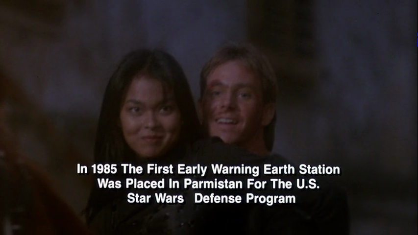

Within the circle of people Liz and I knew through B-Fest at Northwestern University, Gymkata was somewhat legendary despite being a comparatively recent film (1985). For my part, I always have a soft spot in my heart for that very specific sort of 1980s film that doesn’t quite exist in the real world yet isn’t magical realism either. Films in the 1980s were allowed to be weird.
Gymkata was shown at the 2010 festival, allegedly at 9:15 PM, after Heartbeeps. I’m in no position to quibble, but that’s early for me to fall asleep halfway through, and I remember Hard Ticket to Hawaii and (ugh) Sextette. During a 24-hour film festival your brain enters a liminal state and you’ll believe all kinds of things. You’ll think Beastmaster and Krull are the same movie, and wonder (during Krull) when the hell Rip Torn is coming back. Bottom line, I nodded off at points and maintained for years afterwards that I’d missed the main part of the film.
Having now watched Gymkata in a wakeful state, with the full benefit of my faculties…no, I didn’t miss all the much in 2010. It’s just that much of an incoherent mess. Robert Clouse directed, and there are similarities to his earlier (and far better) Enter the Dragon. The plot is this: it’s 1985, the United States is building SDI (“Star Wars”), and we want to install a satellite ground station in the fictional country of Parmistan, somewhere in the Hindu Kush. The Soviet Union is never mentioned. The country is closed to foreigners; all who enter Parmistan must compete in “the game”, which is a weird combination of the Barkley Marathons and a battle royale. Succeed, and your life is spared and you gain any wish within the power of Parmistan’s ruler.
Representing the United States is champion gymnast Jonathan Cabot, played by actual champion gymnast Kurt Thomas in his only feature role. His martial arts style leverages his considerable gymnastic abilities, and this is taken to some absurd lengths, including finding a bar (with chalk!) to swing from when on the run from would-be assassins, and discovering a stone pommel horse in a village square as he’s swarmed by enemies. The foley sounds of kicks landing even when he misses do not enhance the credibility of the performance. Thomas himself is bland and doesn’t give any sense of interiority. Blandness isn’t a problem in itself, and this role might have worked better with someone like Michael Dudikoff (whose American Ninja was released the same year).
There is a whole sub plot/love triangle involving the Kahn’s daughter Princess Rubali (played by Filipina actress Tetchie Agbayani) and the Kahn’s head of security Zamir (Richard Norton, who was also in American Ninja). Zamir’s big plan is to kill Kurt Thomas during the game, supplant the Kahn, marry Rubali, and sell out to the unnamed opposition. It gives away nothing to say that Cabot overcomes all these obstacles, with some assistance from his father (Eric Lawson), who had gone missing competing in the game himself.
The ludicrous patriotism reminds me of various Cannon films like Invasion U.S.A., but this was actually an MGM joint, adapted from the best-selling juvenile fiction novel The Terrible Game, published in 1957 by ex-OSS officer Dan Tyler Moore. I haven’t read it, but apparently the goal there is to place an “atomic howitzer” (Atomic Annie?) in Parmistan. Cannon would have done a better job with the material. Besides all the contrivances that flow from gymnastics-based martial arts, there are several scenes where actors obviously blow their lines. Even Ed Wood would have reshot those scenes. In the final fight between Cabot and Zamir, ostensibly in the wilds of Parmistan, a road and trimmed verge are clearly visible. The end title card is gloriously over-the-top:

One scene is vaguely inspired: it’s established before the game starts that you must pass through a village full of criminally insane people. It’s in this village that Cabot takes to the pommel horse as he’s swarmed by the villagers. There is an extended sequence with no dialogue and creepy, atmospheric music. It works fairly well. No other scene stands out.
If you’re a bad movie fan you need to see this, for the jokes if nothing else. It’s not good, and it’s not quite in so-bad-its-good territory. The performances are a little too understated to take it into that territory. There’s nothing on the order of, say, Hy Pyke in Spawn of Slithis. There’s no monster, no interesting makeup work. In a decade full of good martial arts filmmaking on both sides of the Pacific, Gymkata breaks no new ground.